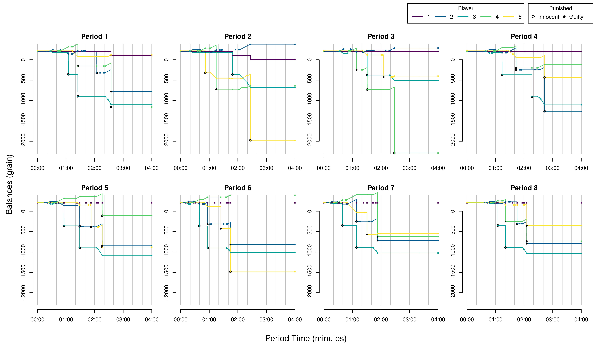
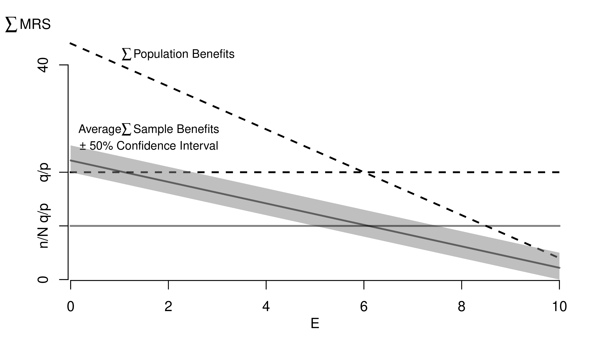
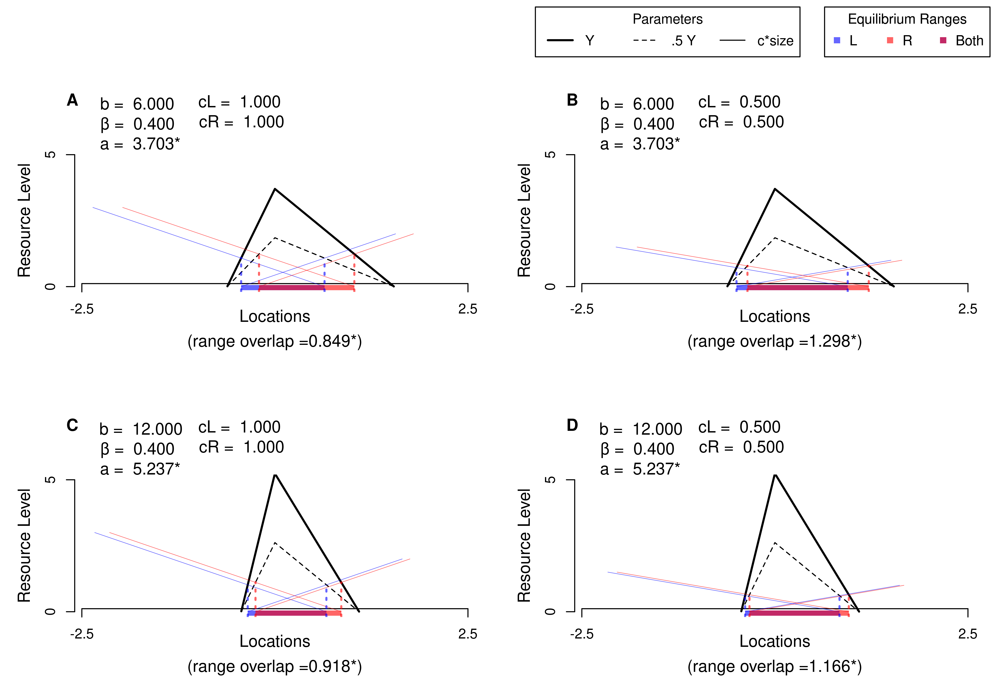
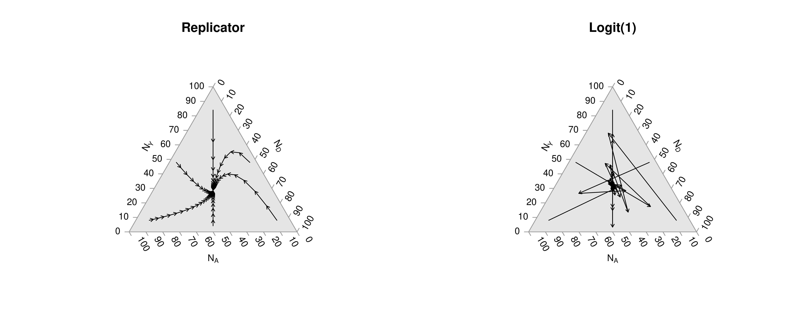
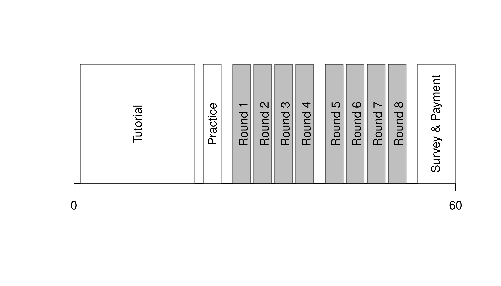

Primer on Programming in R
Dr. J. Adamson
19.10.2022
https://github.com/ http://htmlpreview.github.com/Jadamso/Teaching/blob/main/RPrimers/RReproducible.html
1 First steps
1.1 Install R
Download R and the RStudio GUI
For more help setting up
1.2 Interfacing with the GUI.
Rstudio is easiest to get going. (There are other GUI’s.)
From https://datacarpentry.org/ 
- top left is where you write and save code
- Create and save a new
R Scriptfile My_First_Script.R - could also use a plain .txt file.
- below is where you run your code.
- to the right shows files and plots and …
For all following examples, make sure to both execute and store your code.
Note that
CodeInput_String <- c('code output looks like this')
CodeInput_String## [1] "code output looks like this"## while this is just a comment2 Mathematical Objects
2.1 Scalars and Vectors
x0 <- 1 ## Your first scalar
x0 ## Print the scalar## [1] 1(x0+1)^2 ## Perform and print a simple calculation## [1] 4x0 + NA ## often used for missing values## [1] NAx <- c(0,1,3,10,6) ## Your First Vector
x ## Print the vector## [1] 0 1 3 10 6x[2] ## Print the 2nd Element; 1## [1] 1x+2 ## Print simple calculation; 2,3,5,8,12## [1] 2 3 5 12 8(x+x)^2 ## Another simple calculation with two vectors;## [1] 0 4 36 400 144In R, you use multiple functions on different types of data objects. Moreover, ``typically solve complex problems by decomposing them into simple functions, not simple objects.’’ (H. Wickham)
2.2 Functions of Scalars and Vectors
Define function sum_squared
sum_squared <- function(x1, x2) {
y <- (x1 + x2)^2
return(y)
} sum_squared(1, 3) ## 16## [1] 16sum_squared(x, 2) ## 0,4,9,36,144,400## [1] 4 9 25 144 64sum_squared(x, NA) ## NA,NA,NA,NA,NA## [1] NA NA NA NA NAsum_squared(x, x) ## 0,4,36,144,400## [1] 0 4 36 400 1442.3 Random Variables
random variables are vectors
x2 <- runif(1000)2.4 Functionals
Functions that take functions as arguments
randomise <- function(f){
f( runif(1e3) )
}randomise(mean)## [1] 0.49276randomise(mean)## [1] 0.4967417randomise(sum)## [1] 512.6317Very useful for applying a function over and over again
## sapply(1:3, f) is equivalent to c(f(1), f(2), f(3)).
## mapply takes multiple vectors
mapply(sum, 1:3, runif(3) )## [1] 1.622312 2.544756 3.6872162.5 Matrices and Matrix-Functions
x_mat <- cbind(x,x)
x_mat ## Print full matrix## x x
## [1,] 0 0
## [2,] 1 1
## [3,] 3 3
## [4,] 10 10
## [5,] 6 6x_mat[2,] ## Print Row 2 Elements## x x
## 1 1x_mat[,2] ## Print Column 2 Elements## [1] 0 1 3 10 6y <- apply(x_mat, 1, sum)^2 ## Apply function to each row
## ?apply #checks the function details
y - sum_squared(x, x) ## tests if there are any differences## [1] 0 0 0 0 0Many Other Functions
x_mat * x_mat## x x
## [1,] 0 0
## [2,] 1 1
## [3,] 9 9
## [4,] 100 100
## [5,] 36 36crossprod(x_mat)## x x
## x 146 146
## x 146 146tcrossprod(x_mat) ##x_mat %*% t(x_mat)## [,1] [,2] [,3] [,4] [,5]
## [1,] 0 0 0 0 0
## [2,] 0 2 6 20 12
## [3,] 0 6 18 60 36
## [4,] 0 20 60 200 120
## [5,] 0 12 36 120 72outer(x,x) ##x %o% x## [,1] [,2] [,3] [,4] [,5]
## [1,] 0 0 0 0 0
## [2,] 0 1 3 10 6
## [3,] 0 3 9 30 18
## [4,] 0 10 30 100 60
## [5,] 0 6 18 60 36Example Calculations
## Return Y-value with minimum absolute difference from 3
abs_diff_y <- abs( y - 3 )
abs_diff_y ## is this the luckiest number?## [1] 3 1 33 397 141min(abs_diff_y)## [1] 1which.min(abs_diff_y)## [1] 2y[ which.min(abs_diff_y) ]## [1] 42.6 Arrays and Array Functions
generalization of matrices used in spatial econometrics
a <- array(data = 1:24, dim = c(2, 3, 4))
a## , , 1
##
## [,1] [,2] [,3]
## [1,] 1 3 5
## [2,] 2 4 6
##
## , , 2
##
## [,1] [,2] [,3]
## [1,] 7 9 11
## [2,] 8 10 12
##
## , , 3
##
## [,1] [,2] [,3]
## [1,] 13 15 17
## [2,] 14 16 18
##
## , , 4
##
## [,1] [,2] [,3]
## [1,] 19 21 23
## [2,] 20 22 24a[1, , , drop = FALSE] # Row 1## , , 1
##
## [,1] [,2] [,3]
## [1,] 1 3 5
##
## , , 2
##
## [,1] [,2] [,3]
## [1,] 7 9 11
##
## , , 3
##
## [,1] [,2] [,3]
## [1,] 13 15 17
##
## , , 4
##
## [,1] [,2] [,3]
## [1,] 19 21 23a[, 1, , drop = FALSE] # Column 1## , , 1
##
## [,1]
## [1,] 1
## [2,] 2
##
## , , 2
##
## [,1]
## [1,] 7
## [2,] 8
##
## , , 3
##
## [,1]
## [1,] 13
## [2,] 14
##
## , , 4
##
## [,1]
## [1,] 19
## [2,] 20a[, , 1, drop = FALSE] # Layer 1## , , 1
##
## [,1] [,2] [,3]
## [1,] 1 3 5
## [2,] 2 4 6a[ 1, 1, ] # Row 1, column 1## [1] 1 7 13 19a[ 1, , 1] # Row 1, "layer" 1## [1] 1 3 5a[ , 1, 1] # Column 1, "layer" 1## [1] 1 2a[1 , 1, 1] # Row 1, column 1, "layer" 1## [1] 1apply extends to arrays
apply(a, 1, mean) # Row means## [1] 12 13apply(a, 2, mean) # Column means## [1] 10.5 12.5 14.5apply(a, 3, mean) # "Layer" means## [1] 3.5 9.5 15.5 21.5apply(a, 1:2, mean) # Row/Column combination ## [,1] [,2] [,3]
## [1,] 10 12 14
## [2,] 11 13 152.7 Other Commom Types of Data
l1 <- 1:10 ## cardinal numbers
l2 <- factor(c(1,2,3), ordered=T) ## ordinal numbers, "indicator names"
l3 <- 'hello world' ## character strings
l4 <- list(l1, l2, list(l3, 'way too late')) ## lists
## data.frames: your most common data type
## matrix of different data-types
## well-ordered lists
l5 <- data.frame(x=l1, y=l1)3 Plots
3.1 Basics
Create and Plot a Toy Dataset
x <- seq(1,10) ## create values for x
## Create random standard-normal noise
rnorm(length(x), mean=0, sd=1) ## noise ## [1] 1.2801935 1.9248574 0.2695878 -0.2835533 -0.9661304 -2.2031526
## [7] 1.4650743 0.9633473 -0.7270115 -1.0785878rnorm(length(x), mean=0, sd=1) ## new noise## [1] 1.13907459 1.49985300 -0.53518057 -1.50294407 -1.82485996 -0.33979369
## [7] 0.01408079 0.82557397 -0.51409180 -0.16534151e <- rnorm(length(x), mean=0, sd=1) ## store
y <- .25*x + e ## create values for y
xy_mat <- cbind(x=x, y=y)
## your first plot is pretty standard
plot(y~x, xy_mat) ## pretty and standard
Create and Plot a Larger Toy Dataset
x <- seq(1, 10, by=.0002)
e <- rnorm(length(x), mean=0, sd=1)
y <- .25*x + e
xy_dat <- data.frame(x=x, y=y)
head(xy_dat)## x y
## 1 1.0000 0.8465454
## 2 1.0002 0.6908411
## 3 1.0004 1.7274556
## 4 1.0006 0.2861865
## 5 1.0008 -1.7872953
## 6 1.0010 -0.2516187plot(y~x, xy_dat, pch=16, col=rgb(0,0,0,.1), cex=.5)
3.2 Equation Fitting Example
Run and Plot an OLS Regression
reg <- lm(y~x, data=xy_dat)
summary(reg)##
## Call:
## lm(formula = y ~ x, data = xy_dat)
##
## Residuals:
## Min 1Q Median 3Q Max
## -4.5077 -0.6755 0.0003 0.6753 4.1840
##
## Coefficients:
## Estimate Std. Error t value Pr(>|t|)
## (Intercept) -0.005054 0.011018 -0.459 0.646
## x 0.250223 0.001811 138.142 <2e-16 ***
## ---
## Signif. codes: 0 '***' 0.001 '**' 0.01 '*' 0.05 '.' 0.1 ' ' 1
##
## Residual standard error: 0.9983 on 44999 degrees of freedom
## Multiple R-squared: 0.2978, Adjusted R-squared: 0.2978
## F-statistic: 1.908e+04 on 1 and 44999 DF, p-value: < 2.2e-16## Add the line of best fit
plot(y~x, xy_dat, pch=16, col=rgb(0,0,0,.1), cex=.5)
abline(reg)
## Can Also Add Confidence Intervals
## https://rpubs.com/aaronsc32/regression-confidence-prediction-intervalsPolish and Export Your Plot
plot(y~x, xy_dat, pch=16, col=rgb(0,0,0,.1), cex=.5,
xlab='', ylab='') ## Format Axis Labels Seperately
mtext('y=0.25 x + e\n e ~ standard-normal', 2, line=2)
mtext('x=[1,...,10]', 1, line=2)
title('Plot like a Boss')
title('boss: american slang for excellent; outstanding',
cex.main=.5, font=1, line=1)
legend('topleft', legend='single data point',
title='do you see the normal distribution?',
pch=16, col=rgb(0,0,0,.1), cex=.5)
Can export figure with specific dimensions
pdf( 'Figures/plot_example.pdf', height=5, width=5)
plot(y~x, xy_dat, pch=16, col=rgb(0,0,0,.1), cex=.5)
dev.off()4 Moving beyond the basics
Use expansion packages for common procedures and more functionality
## Other packages used in this primer
install.packages("stargazer")
install.packages("reshape2")
install.packages("purrr")The most common tasks have cheatsheets you can use. E.g.,
Sometimes you will want to install a package from GitHub. For this, you can use devtools
install.packages("devtools")4.1 Task Views
Task views list relevant packages. E.g.,
For all students and early researchers,
For microeconometrics,
For spatial econometrics
- https://cran.r-project.org/web/views/Spatial.html
- https://cran.r-project.org/web/views/SpatioTemporal.html
Multiple packages may have the same function name for different commands. In this case use package::function_name to specify the package
Don’t fret Sometimes there is not a specific package for your data.
Odds are, you can do most of what you want with base code.
- Packages just wrap base code in convient formats
- see https://cran.r-project.org/web/views/ for topical overviews
Statisticians might have different naming conventions
- if the usual software just spits out a nice plot you might have to dig a little to know precisely what you want
- your data are fundamentally numbers, strings, etc… You only have to figure out how to read it in.
But remember that many of the best plots are custom made (see https://www.r-graph-gallery.com/), and can also be interactive or animated
4.2 Introductions to R
There are many good yet free programming books online. E.g.,
- https://cran.r-project.org/doc/manuals/R-intro.html
- R Graphics Cookbook, 2nd edition. Winston Chang. 2021. https://r-graphics.org/
- Spatial Data Science with R: Introduction to R. Robert J. Hijmans. 2021. https://rspatial.org/intr/index.html
- R for Data Science. H. Wickham and G. Grolemund. 2017. https://r4ds.had.co.nz/index.html
- An Introduction to R. W. N. Venables, D. M. Smith, R Core Team. 2017. https://colinfay.me/intro-to-r/
There are also many good yet free-online tutorials and courses. E.g., \
- https://rafalab.github.io/dsbook/
- https://moderndive.com/foreword.html
- https://rstudio.cloud/learn/primers/1.2
- https://cran.r-project.org/manuals.html
- https://stats.idre.ucla.edu/stat/data/intro_r/intro_r_interactive_flat.html
- https://cswr.nrhstat.org/app-r
What we covered in this primer should be enough to get you going.
5 Data analysis examples
5.1 US Gov’t Spending on Science
Lets inspect some spurious correlations inside https://tylervigen.com/spurious-correlations
## Your data is not made up in the computer (hopefully!)
## will normally be an address on your PC
vigen_csv <- read.csv( paste0(
'https://raw.githubusercontent.com/the-mad-statter/',
'whysospurious/master/data-raw/tylervigen.csv') )
class(vigen_csv)## [1] "data.frame"names(vigen_csv)## [1] "year" "science_spending"
## [3] "hanging_suicides" "pool_fall_drownings"
## [5] "cage_films" "cheese_percap"
## [7] "bed_deaths" "maine_divorce_rate"
## [9] "margarine_percap" "miss_usa_age"
## [11] "steam_murders" "arcade_revenue"
## [13] "computer_science_doctorates" "noncom_space_launches"
## [15] "sociology_doctorates" "mozzarella_percap"
## [17] "civil_engineering_doctorates" "fishing_drownings"
## [19] "kentucky_marriage_rate" "oil_imports_norway"
## [21] "chicken_percap" "train_collision_deaths"
## [23] "oil_imports_total" "pool_drownings"
## [25] "nuclear_power" "japanese_cars_sold"
## [27] "motor_vehicle_suicides" "spelling_bee_word_length"
## [29] "spider_deaths" "math_doctorates"
## [31] "uranium"vigen_csv[1:5,1:5]## year science_spending hanging_suicides pool_fall_drownings cage_films
## 1 1996 NA NA NA NA
## 2 1997 NA NA NA NA
## 3 1998 NA NA NA NA
## 4 1999 18079 5427 109 2
## 5 2000 18594 5688 102 2## similar `apply' functions
lapply(vigen_csv[,1:5], class) ## like apply, but for lists## $year
## [1] "integer"
##
## $science_spending
## [1] "integer"
##
## $hanging_suicides
## [1] "integer"
##
## $pool_fall_drownings
## [1] "integer"
##
## $cage_films
## [1] "integer"sapply(vigen_csv[,1:5], class) ## lapply, formatted to a vector## year science_spending hanging_suicides pool_fall_drownings
## "integer" "integer" "integer" "integer"
## cage_films
## "integer"The US government spending on science is ruining cinema (p<.001)!
## Drop Data before 1999
vigen_csv <- vigen_csv[vigen_csv$year >= 1999,]
## Run OLS Regression $
reg1 <- lm(cage_films ~ -1 + science_spending,
data=vigen_csv)
summary(reg1)##
## Call:
## lm(formula = cage_films ~ -1 + science_spending, data = vigen_csv)
##
## Residuals:
## Min 1Q Median 3Q Max
## -1.7670 -0.7165 0.1447 0.7890 1.4531
##
## Coefficients:
## Estimate Std. Error t value Pr(>|t|)
## science_spending 9.978e-05 1.350e-05 7.39 2.34e-05 ***
## ---
## Signif. codes: 0 '***' 0.001 '**' 0.01 '*' 0.05 '.' 0.1 ' ' 1
##
## Residual standard error: 1.033 on 10 degrees of freedom
## (1 observation deleted due to missingness)
## Multiple R-squared: 0.8452, Adjusted R-squared: 0.8297
## F-statistic: 54.61 on 1 and 10 DF, p-value: 2.343e-05It’s not all bad, people in maine stay married longer.
plot.new()
plot.window(xlim=c(1999, 2009), ylim=c(7,9))
lines(log(maine_divorce_rate*1000)~year, data=vigen_csv)
lines(log(science_spending/10)~year, data=vigen_csv, lty=2)
axis(1)
axis(2)
legend('topright', lty=c(1,2), legend=c(
'log(maine_divorce_rate*1000)',
'log(science_spending/10)'))
For more intuition on spurious correlations, try http://shiny.calpoly.sh/Corr_Reg_Game/
par(mfrow=c(1,2), mar=c(2,2,2,1))
plot.new()
plot.window(xlim=c(1999, 2009), ylim=c(5,9)*1000)
lines(science_spending/3~year, data=vigen_csv, lty=1, col=2, pch=16)
text(2003, 8200, 'US spending on science, space, technology (USD/3)', col=2, cex=.6, srt=30)
lines(hanging_suicides~year, data=vigen_csv, lty=1, col=4, pch=16)
text(2004, 6500, 'US Suicides by hanging, strangulation, suffocation (Deaths)', col=4, cex=.6, srt=30)
axis(1)
axis(2)
plot.new()
plot.window(xlim=c(2002, 2009), ylim=c(0,5))
lines(cage_films~year, data=vigen_csv[vigen_csv$year>=2002,], lty=1, col=2, pch=16)
text(2006, 0.5, 'Number of films with Nicolas Cage (Films)', col=2, cex=.6, srt=0)
lines(pool_fall_drownings/25~year, data=vigen_csv[vigen_csv$year>=2002,], lty=1, col=4, pch=16)
text(2006, 4.5, 'Number of drownings by falling into pool (US Deaths/25)', col=4, cex=.6, srt=0)
axis(1)
axis(2)
And don’t Forget ``if you torture the data long enough, it will confess.’’
## Include an intercept to regression 1
reg2 <- lm(cage_films ~ science_spending, data=vigen_csv)
library(stargazer)##
## Please cite as:## Hlavac, Marek (2022). stargazer: Well-Formatted Regression and Summary Statistics Tables.## R package version 5.2.3. https://CRAN.R-project.org/package=stargazerstargazer(reg1, reg2, type='text')##
## ============================================================
## Dependent variable:
## ----------------------------------------
## cage_films
## (1) (2)
## ------------------------------------------------------------
## science_spending 0.0001*** 0.0001
## (0.00001) (0.0001)
##
## Constant -0.140
## (2.166)
##
## ------------------------------------------------------------
## Observations 11 11
## R2 0.845 0.124
## Adjusted R2 0.830 0.026
## Residual Std. Error 1.033 (df = 10) 1.089 (df = 9)
## F Statistic 54.609*** (df = 1; 10) 1.271 (df = 1; 9)
## ============================================================
## Note: *p<0.1; **p<0.05; ***p<0.01Nevertheless, data transformation is often necessary before regression analysis. For downloading tips, see https://raw.githubusercontent.com/rstudio/cheatsheets/main/data-import.pdf
5.2 Data processing simulation
Make random datasets
make_noisy_data <- function(n){
x <- seq(1,10, length.out=n)
e <- rnorm(length(x), mean=0, sd=10)
y <- .25*x + e
xy_mat <- data.frame(ID=seq(x),x=x, y=y)
return(xy_mat)
}
dat1 <- make_noisy_data(6)
dat1## ID x y
## 1 1 1.0 -2.599336
## 2 2 2.8 6.269934
## 3 3 4.6 -9.431466
## 4 4 6.4 -3.141720
## 5 5 8.2 -16.349300
## 6 6 10.0 -12.603404dat2 <- make_noisy_data(6)
## merging data in wide format
dat_merged_wide <- merge(dat1, dat2,
by='ID', suffixes=c('.1','.2'))Data Merging
## merging data in long format and reshaping to wide
dat_merged_long <- rbind( cbind(dat1,DF=1),cbind(dat2,DF=2))
library(reshape2)
dat_melted <- melt(dat_merged_long, id.vars=c('ID', 'DF'))
dat_merged_wide2 <- dcast(dat_melted, ID~DF+variable)
dat_merged_wide == dat_merged_wide2## ID x.1 y.1 x.2 y.2
## [1,] TRUE TRUE TRUE TRUE TRUE
## [2,] TRUE TRUE TRUE TRUE TRUE
## [3,] TRUE TRUE TRUE TRUE TRUE
## [4,] TRUE TRUE TRUE TRUE TRUE
## [5,] TRUE TRUE TRUE TRUE TRUE
## [6,] TRUE TRUE TRUE TRUE TRUE5.3 Custom figures








6 Latest versions
Make sure your packages are up to date
update.packages()Make sure you have the latest version of R for class. If not, then reinstall R.
After reinstalling, you can update all packages stored in all .libPaths() with the following command
pkgs <- installed.packages( .libPaths() )[,'Package']
install.packages(
pkgs=pkgs,
lib=.libPaths()[1],
type='source'
)To find all broken packages after an update
library(purrr)
set_names(.libPaths()) %>%
map(function(lib) {
.packages(all.available = TRUE, lib.loc = lib) %>%
keep(function(pkg) {
f <- system.file('Meta', 'package.rds', package = pkg, lib.loc = lib)
tryCatch({readRDS(f); FALSE}, error = function(e) TRUE)
})
})
## https://stackoverflow.com/questions/31935516/installing-r-packages-error-in-readrdsfile-error-reading-from-connection/55997765